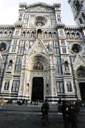
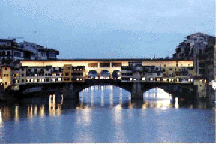
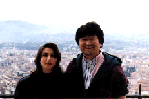
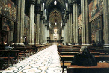
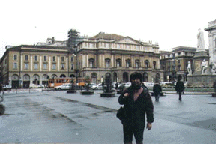
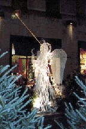
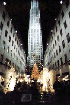
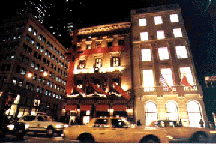

Firenze, Milan and New York (96/12/6-96/12/15)

FirenzeのDuomo。街に溶け込んでおり、歩いていくといきなり出てくる。写真で見ると大理石で奇麗だけれど、実物は結構汚れています。また、大理石の浸食も気になります。手入れが難しそう。

Arno河に架かるVecchio橋。別にリバーサルで取ったわけではありません。の割には奇麗に取れましたね。

Firenzeの子はかわいいね。
って左だよ。 :-p

Duomoの中。かなり薄暗い。タペストリーがかかっており何か重要な意味があるらしい。無学な私には分からない。

ミラノオペラ座。中の写真を見ると凄いのですが、外見は特に変哲のない建物です。で、私はオペラを見るような身分ではないので残念ながら中は直接見たことは有りません。

ロックフェラーセンターの天使達。ライトアップが美しい。毎年こんな感じだと聞いています。

始めてみたロックフェラーセンターのクリスマス。スケートリンクで滑るのは結構勇気が要って自分は論外。天使達とクリスマスツリーとGEビル（今は違う名前でしたっけ？）がマッチしていてとっても奇麗。関係ないけれど左のビルの地下に郵便局があります。切手が欲しい人はココで買えます。

いつもテレビで見ていたクリスマスのニューヨーク。このリボンがかかったビルはCELINEのブティックだった。でも、微妙に毎年リボンの結び目が違っているみたい。他にはこのような衣装のビルはなかった。さすがニューヨーク。人のまねをする奴は居ないんだね。
update：Dec/31/96